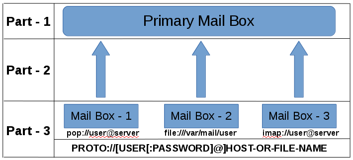

Emacs中使用Rmail收取邮件
因为Linux下工作，邮件使用频率较高。遂选择一款好的邮件客户端是件必要的事情。
经两天的间断时间，简单配置了Emacs中使用Mail、Rmail用以收发邮件。在此，
只简单介绍Rmail的使用。Rmail是什么呢？我认为Rmail是一个利用本地应用movemail
，将本地用户邮箱或远程邮箱(支持多种协议)里的新邮件合并追加到Primary
Mail File里的Emacs插件。下面图片希望可以有助于快速熟悉Rmail。在此也会
根据下图来介绍Rmail。

1 Part - 1
Rmail启动（M-x rmail）时会读取PrimaryMail Box和合并子邮箱 （上图Mail Box 1-3）里的新邮件到Primary Mail Box。Emacs Lisp 变量'rmail-file-name'用以定义Primary Mail File的位置，默认是"~/RMAIL"。
(setq rmail-file-name "~/mails/rmail") ; Rmail Primary Mail
参阅手册Basic Concepts of Rmail小节。
2 Part - 2
这部分就是上面提到的movemail了，也是收取安全类型为TLS等策略的邮件的重要环节。 Rmail使用movemail应用来移动子邮箱里的新邮件到Primary Mail Box。 可使用的movemail有两个。
- Emacs 自带的movemail
- GNU Mailutils下的movemail
因为Emacs自带的movemail功能不如Mailutils的强大，最重要的是我们需要 Emacs movemail不支持的TLS/STARTTLS。所以，安装Mailutils是件必要的事情。 Mailutils下载。安装后需要改变Emacs movemail的加载位置，如下：
(setq rmail-movemail-program "/opt/mailutils-3.0/bin/movemail") ; movemail
关于Movemail的细节在movemail program，关于为什么换用Mailutils的movemail 见Retrieving Mail from Remote Mailboxes。
3 Part - 3
接下来就是需要配置子邮箱咯。根据Rmail Files and Inboxes小节说明。子邮箱在默认不配置 的情况下，movemail会读取/var/mail/username、/var/spool/mail/username或 /usr/spool/mail/username，并合并新邮件到Primary Mail Box。然而，工作中经常查看的 是远端服务器上邮箱里的邮件。所以，接下来配置Emacs lisp变量“rmail-primary-inbox-list”， 将远端服务器邮箱配置在列。让movemail读取远端邮箱里的新邮件，并合并到Primary Mail Box。 更多子邮箱的URL格式遵守:“PROTO://[USER[:PASSWORD]@]HOST-OR-FILE-NAME”格式。
(setq rmail-primary-inbox-list '("pop://user@server.com"
"/var/mail/localuser"))
这里多的添加了一个file协议的子邮箱，用以实践说明‘movemail’ program里的协议。 更多子邮箱配置细节参考movemail program、Rmail Files and Inboxes，远端邮箱配置 参考Retrieving Mail from Remote Mailboxes。
4 完
在此请原谅出现的疏漏和错误，否则你也不能怎么着我。^_^!
就不说我的邮箱是:xue.shumeng@yahoo.com，让你想批评我还找不到我。
(setq rmail-file-name "~/mails/rmail") ; Rmail Primary Mail Box
(setq rmail-movemail-program "/opt/mailutils-3.0/bin/movemail") ; movemail
(setq rmail-primary-inbox-list '("pop://user@server.com" ; Remote Mail Box
"/var/mail/localuser") ; Local Mail Box
rmail-pop-password-required t) ; Prompt